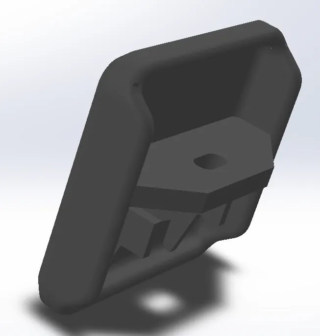
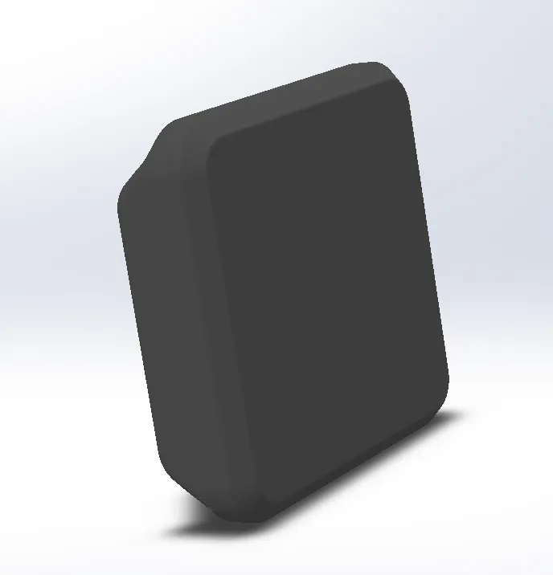
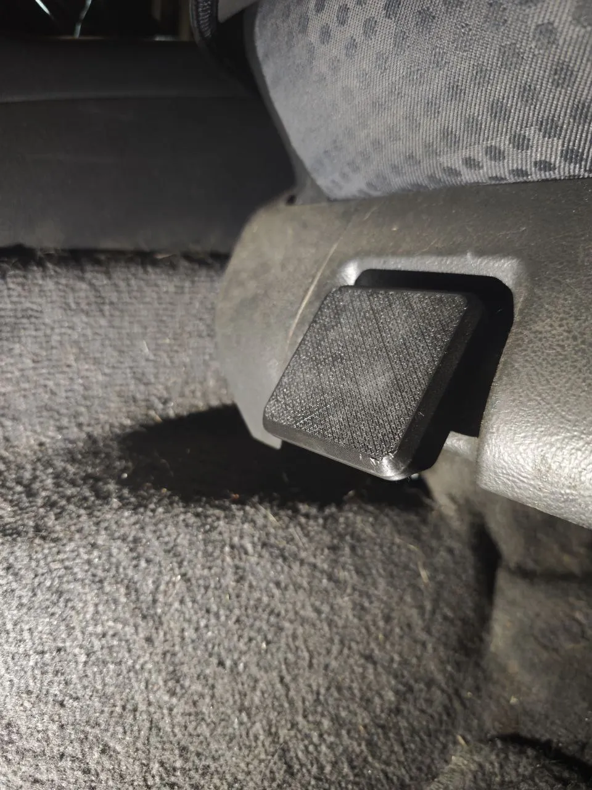
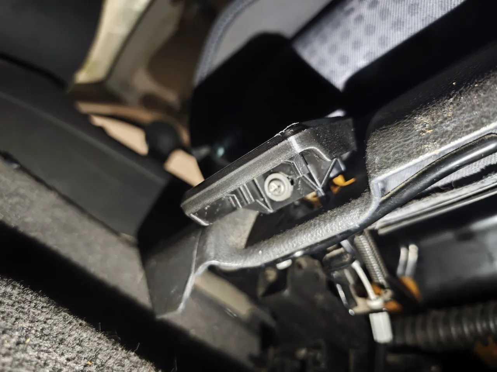
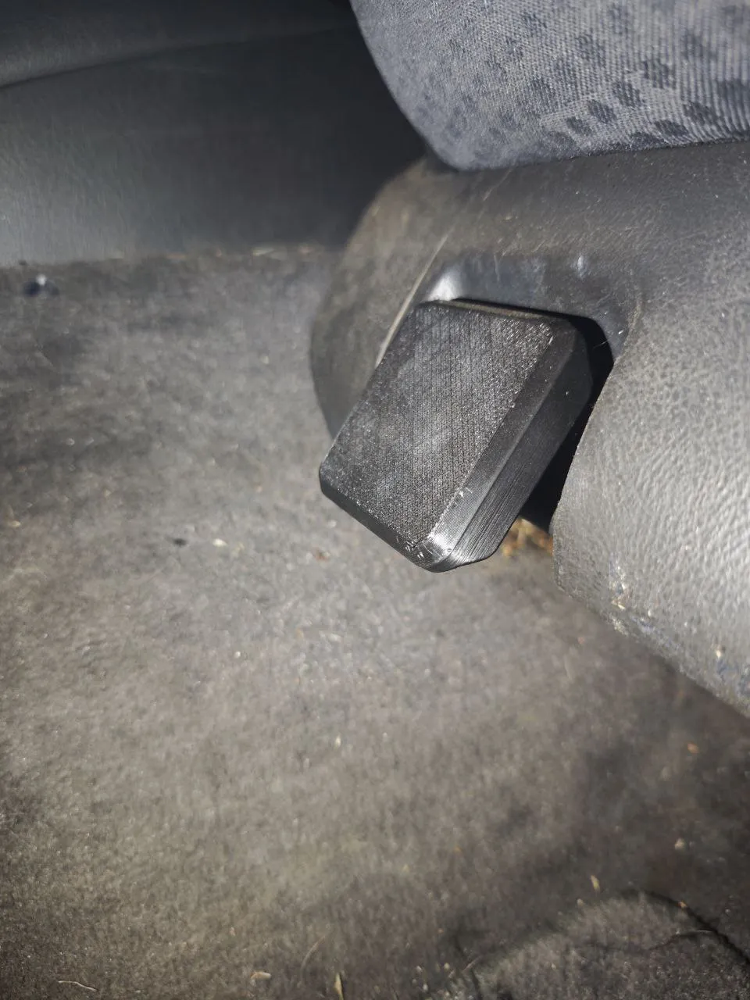

Maneta tirador asiento Mercedes ML W163
Material: PLA negro • Uso: repuesto para asientos delanteros
Maneta de repuesto para el tirador de ajuste de asiento delantero (conductor o copiloto) de Mercedes ML W163.
Impresa en PLA negro de alta resistencia, con acabado liso y ajuste preciso.
Compatible con las versiones de Mercedes ML W163 (1998–2005).
25 €